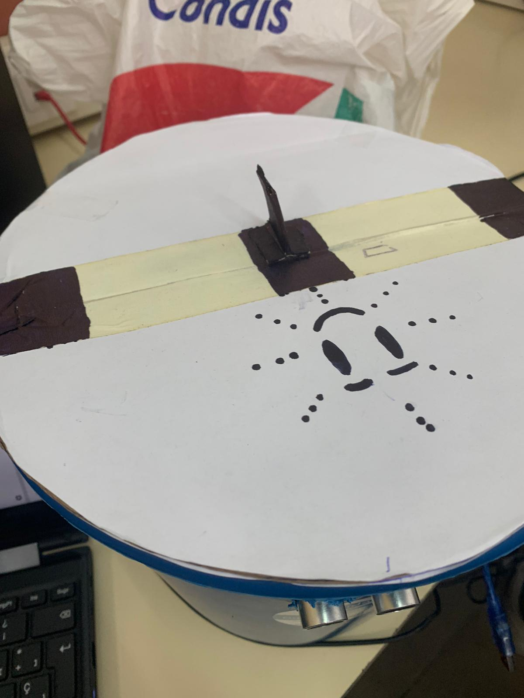
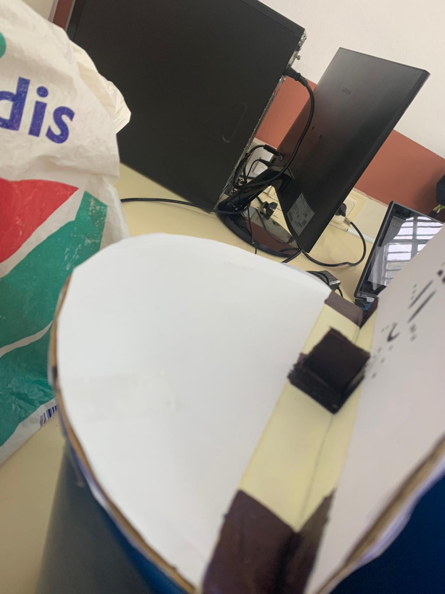
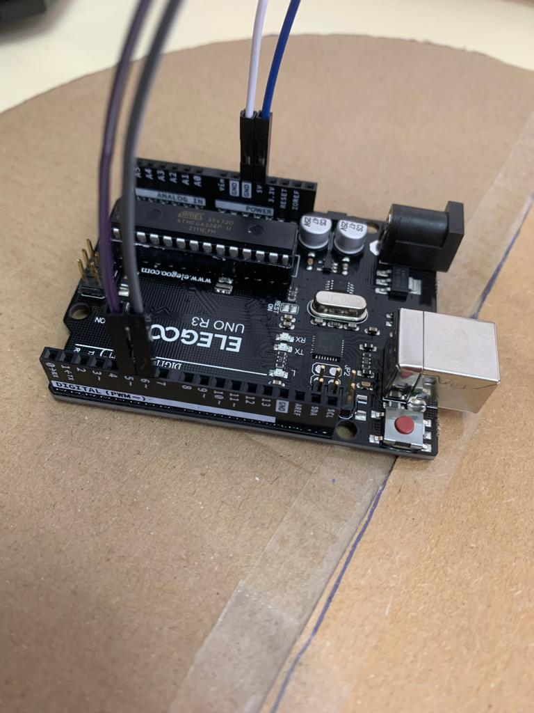
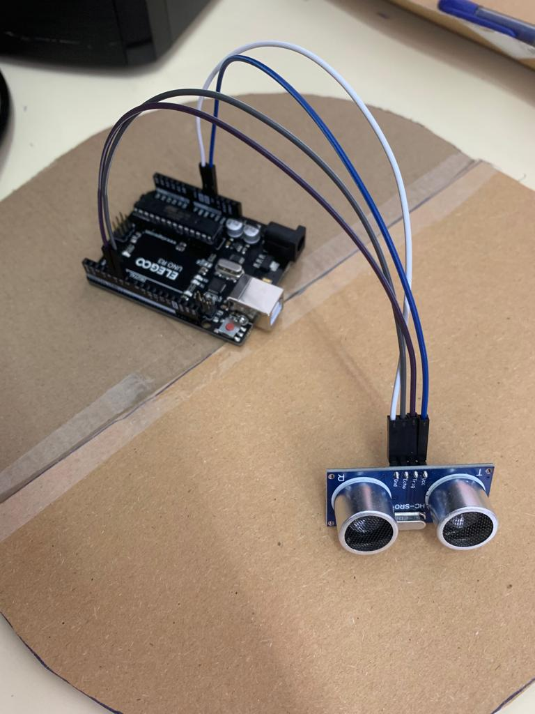
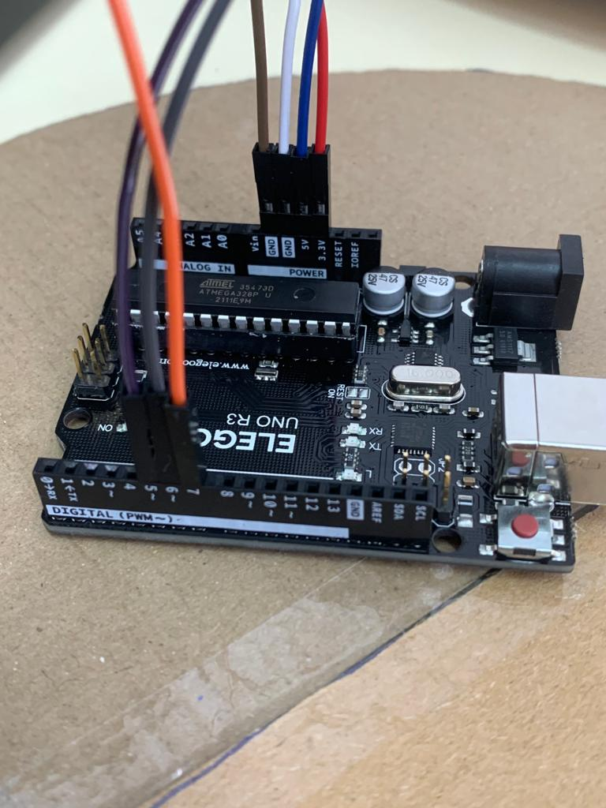
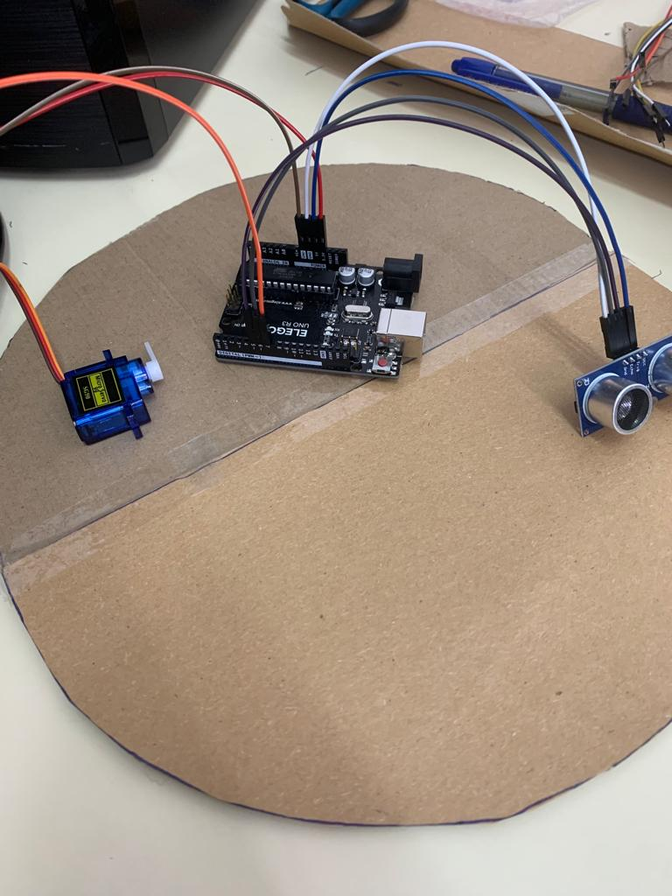

Hicimos la tapa con cartones cortados por la mitad con la forma del cubo y los pusimos con celo para que se pueda doblar.

Tambien le pusimos un tope para que cuando se abra no se caiga la tapa para atras y pueda volver a cerrarse.

Aquí empezamos conectado en sensor de ultrasonidos a la placa de arduino: cable azul:5V - cable blanco: GND - cable gris: En el pin 6 - cable morado: En el pin 5

Asi se veria con el sensor conectado.

aqui añadimos también los cables del servomotor: cable rojo: 3.3V - cable marron: GND - cable naranja: En el pin 7

aquí tendríamos todo conectado correctamente
